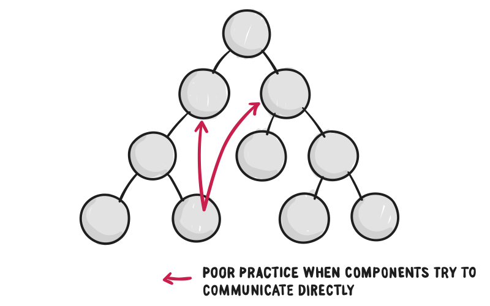

Modern Architecture of SPA: React+Redux Case Study
Matas Šeimys
2016 08 25
About me
(Mostly frontend) Developer at Adform
Buyer Unit, Buying Workflow POD
Latest frontend stack in use: React+Redux+Immutable.js+TypeScript+Webpack
Example of a complex SPA
First attempt building such app
End result after a few years
Functional Reactive Programming
Programming paradigm, introduced in 1997
FRP is about datatypes that represent a value 'over time'
You can define these values and combine them, pass them into & out of functions
`.filter(...).map(...).reduce(...)`
Value 'over time'?
var x = {{mouse-x}}; // value 'over time': 10, 20, 30, 15...
var y = {{mouse-y}};
minX = x - 16;
minY = y - 16;
maxX = x + 16;
maxY = y + 16; // new values out of values 'over time'
rectangle(minX, minY, maxX, maxY) // draws rectangle 'over time'
1. One-way state transitions
Most significant of FRP: Changes to the model all go through a common type of dispatcher
2. Immutable data
Immutable object is an object whose state cannot be modified after it is created
var x = { a: 1, b: 2 };
var y = x;
x.a = 3; // mutation!
x === y // true
var x = { a: 1, b: 2 };
var y = Object.assign({}, x); // clone
x2 = x.set("a", 3); // x stays the same
x === y // false
x === x2 // false
Why immutable data?

Amazing change detection perfomance!
3. Pure functions
No side effects: simple to build, test, and maintain
Follow the single responsibility principle and keeps things simple
Example of Non Pure
var thing = createObjectWithCurrentDate();
var n = generateRandom();
var total = 0;
function pickItem(customer, item) {
if (!authService.isLoggedIn()) return; // or throw, or redirect
if (customer.hasNoBasket) {
customer.basket = [];
}
customer.basket.push(item.id);
total++;
}
React Components
Single responsibility principle:
A component should ideally only do one thing

Simple React App
import * as React from "react";
import * as ReactDOM from "react-dom";
class Hello extends React.Component {
render() {
return Hello {this.props.name}!;
}
}
ReactDOM.render(
<Hello name="React" />,
document.getElementById("app")
);
Component with State
export class Hello extends React.Component {
constructor() {
super();
this.state = { counter: 0 };
}
handleClick() {
this.setState({counter: this.state.counter + 1});
}
render() {
return
{this.props.name} counter: {this.state.counter}!
;
}
}
<Hello name="React" />,
Pure Components
class Hello extends React.PureComponent { ... }
const Hey = ({ name }) => Hey {name}!;
// or with named function
function Hey({ name }) {
return Hey {name}!;
}
More components!
import {UserList} from './components/user-list';
import {Header} from './components/header';
import {InfoBox} from './components/helpers';
class App extends React.Component {
render() {
return
<Header onClick={...}><InfoBox message={...}/></Header>
<UserList users={this.state.users}/>
;
}
}
ReactDOM.render(<App />, document.getElementById("app"));
Communication
Leads to spaghetti code!
Redux is a tool for managing both data-state and UI-state in JavaScript applications. Can be any framework!

State Changes
Sample reducer
const initialState = 1;
const INCREMENT = "INCREMENT";
// Incomming action: { type: INCREMENT, amount: 10 }
// Look Ma, pure function!
function myReducer(state = initialState, action) {
switch (action.type) {
case INCREMENT:
return state + action.amount;
default:
return state;
}
}
Proper reducer with mutable objects
const initialState = [];
// action: { type: ADD_USER, user: "Matas" }
function reducer(state = initialState, action) {
switch (action.type) {
case ADD_USER:
return state.concat([action.user]); // creates new state
default:
return state;
}
}
Combining reducers
import { createStore, combineReducers } from "redux";
// The User Reducer
const userReducer = function(state = {}, action) {
return state;
}
// The Widget Reducer
const widgetReducer = function(state = {}, action) {
return state;
}
// Combine Reducers
const reducers = combineReducers({
userState: userReducer,
widgetState: widgetReducer
});
const store = createStore(reducers);
Connect everything!said PD

Here be values 'over time'!!
import {connect} from "react-redux";
const mapStateToProps = (state) => ({
counter: state.counter
});
const mapDispatchToProps = (dispatch) => ({
onIncrement: (amount) => { dispatch(increment(amount)) }
});
// Connect to state value 'over time'
export const ConnectedMyComponent = connect(
mapStateToProps,
mapDispatchToProps
)(MyComponent);
// Behind the scenes MyComponent recieves new props:
// <ConnectedMyComponent counter={...} onIncrement={...}/>
Final words
- No "best JS framework" that fits it all
- Understand paradigms, principles and patterns
- Try to grasp the reasons behind each new framework
Do not be like the dog :)
You should aim to understand the root.
Less distraction, more focus.